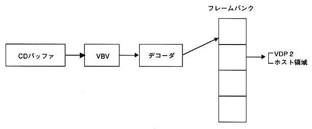

Return to previous page ｜ Return to menu ｜ Go to next page
-
3.2 Still image playback
- In still image playback mode, the video stream data in the CD buffer can be decoded by specifying the frame bank number. The frame bank number to be output can be specified and output directly to VDP2, or transferred to VRAM by the host and displayed.

Figure 3.3 Data flow during still image playback
Return to previous page ｜ Return to menu ｜ Go to next page